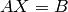
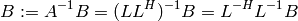
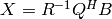
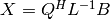
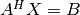
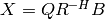
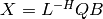
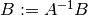
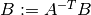
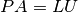

Linear solvers¶
Cholesky solve¶
Solves  for  given Hermitian positive-definite (HPD)
given Hermitian positive-definite (HPD)
 and right-hand side matrix
and right-hand side matrix  . The solution is computed by
first finding the Cholesky factorization of and then performing two
successive triangular solves against :
. The solution is computed by
first finding the Cholesky factorization of and then performing two
successive triangular solves against :

- void CholeskySolve(UpperOrLower uplo, Matrix<F>& A, Matrix<F>& B)¶
- void CholeskySolve(UpperOrLower uplo, DistMatrix<F>& A, DistMatrix<F>& B)¶
Overwrite B with the solution to , where A is Hermitian positive-definite and only the triangle of A specified by uplo is accessed.
Gaussian elimination¶
Solves for given a general square nonsingular matrix
and right-hand side matrix . The solution is computed through
(partially pivoted) Gaussian elimination.
- void GaussianElimination(Matrix<F>& A, Matrix<F>& B)¶
- void GaussianElimination(DistMatrix<F>& A, DistMatrix<F>& B)¶
Upon completion,
will have been overwritten with Gaussian
elimination and will be overwritten with .
Householder solve¶
Solves or  for in a least-squares sense
given a general full-rank matrix
for in a least-squares sense
given a general full-rank matrix  .
If
.
If  , then the first step is to form the QR factorization of
, otherwise the LQ factorization is computed.
, then the first step is to form the QR factorization of
, otherwise the LQ factorization is computed.
- If solving , then either  or .
- If solving , then either  or .
- void HouseholderSolve(Orientation orientation, Matrix<F>& A, const Matrix<F>& B, Matrix<F>& X)¶
- void HouseholderSolve(Orientation orientation, DistMatrix<F>& A, const DistMatrix<F>& B, DistMatrix<F>& X)¶
If orientation is set to NORMAL, then solve , otherwise orientation must be equal to ADJOINT and will be solved. Upon completion,
is overwritten with its QR or LQ
factorization, and is overwritten with the solution.
Solve after Cholesky¶
Uses an in-place Cholesky factorization to solve against one or more right-hand sides.
- void SolveAfterCholesky(UpperOrLower uplo, Orientation orientation, const Matrix<F>& A, Matrix<F>& B)¶
- void SolveAfterCholesky(UpperOrLower uplo, Orientation orientation, const DistMatrix<F>& A, DistMatrix<F>& B)¶
Update , , or
 , where one triangle of has been overwritten
with its Cholesky factor.
, where one triangle of has been overwritten
with its Cholesky factor.
Solve after LU¶
Uses an in-place LU factorization (with or without partial pivoting) to solve against one or more right-hand sides.
- void SolveAfterLU(Orientation orientation, const Matrix<F>& A, Matrix<F>& B)¶
- void SolveAfterLU(Orientation orientation, const DistMatrix<F>& A, DistMatrix<F>& B)¶
Update , , or
, where has been overwritten with its LU
factors (without partial pivoting).
- void SolveAfterLU(Orientation orientation, const Matrix<F>& A, const Matrix<int>& p, Matrix<F>& B)¶
- void SolveAfterLU(Orientation orientation, const DistMatrix<F>& A, const DistMatrix<int, VC, STAR>& p, DistMatrix<F>& B)¶
Update , , or
, where has been overwritten with
its LU factors with partial pivoting, which satisfy , where
the permutation matrix  is represented by the pivot vector p.
is represented by the pivot vector p.